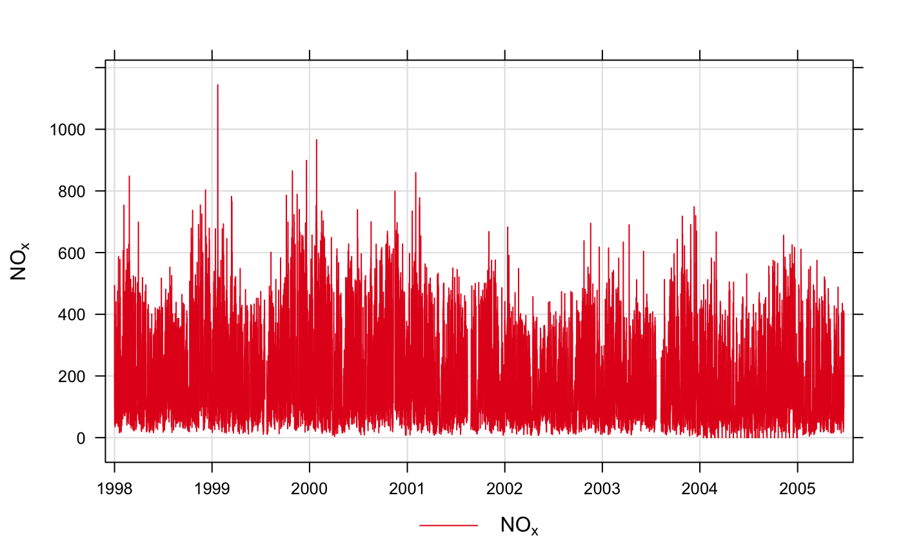

Plot time series quickly, perhaps for multiple pollutants, grouped or in separate panels.
timePlot( mydata, pollutant = "nox", group = FALSE, stack = FALSE, normalise = NULL, avg.time = "default", data.thresh = 0, statistic = "mean", percentile = NA, date.pad = FALSE, type = "default", cols = "brewer1", plot.type = "l", key = TRUE, log = FALSE, windflow = NULL, smooth = FALSE, ci = TRUE, y.relation = "same", ref.x = NULL, ref.y = NULL, key.columns = 1, key.position = "bottom", name.pol = pollutant, date.breaks = 7, date.format = NULL, auto.text = TRUE, ... )
| mydata | A data frame of time series. Must include a
|
|---|---|
| pollutant | Name of variable to plot. Two or more pollutants
can be plotted, in which case a form like |
| group | If more than one pollutant is chosen, should they all
be plotted on the same graph together? The default is
|
| stack | If |
| normalise | Should variables be normalised? The default is is
not to normalise the data. |
| avg.time | This defines the time period to average to. Can be
“sec”, “min”, “hour”, “day”,
“DSTday”, “week”, “month”, “quarter”
or “year”. For much increased flexibility a number can
precede these options followed by a space. For example, a
timeAverage of 2 months would be |
| data.thresh | The data capture threshold to use (%) when
aggregating the data using |
| statistic | The statistic to apply when aggregating the data;
default is the mean. Can be one of “mean”, “max”,
“min”, “median”, “frequency”, “sd”,
“percentile”. Note that “sd” is the standard
deviation and “frequency” is the number (frequency) of
valid records in the period. “percentile” is the
percentile level (%) between 0-100, which can be set using the
“percentile” option - see below. Not used if
|
| percentile | The percentile level in % used when
|
| date.pad | Should missing data be padded-out? This is useful
where a data frame consists of two or more "chunks" of data with
time gaps between them. By setting |
| type |
It is also possible to choose Only one |
| cols | Colours to be used for plotting. Options include
“default”, “increment”, “heat”,
“jet” and |
| plot.type | The |
| key | Should a key be drawn? The default is |
| log | Should the y-axis appear on a log scale? The default is
|
| windflow | This option allows a scatter plot to show the wind
speed/direction as an arrow. The option is a list e.g.
The maximum length of the arrow plotted is a fraction of the
plot dimension with the longest arrow being This option works best where there are not too many data to ensure over-plotting does not become a problem. |
| smooth | Should a smooth line be applied to the data? The
default is |
| ci | If a smooth fit line is applied, then |
| y.relation | This determines how the y-axis scale is plotted. "same" ensures all panels use the same scale and "free" will use panel-specific scales. The latter is a useful setting when plotting data with very different values. |
| ref.x | See |
| ref.y | A list with details of the horizontal lines to be
added representing reference line(s). For example, |
| key.columns | Number of columns to be used in the key. With
many pollutants a single column can make to key too wide. The
user can thus choose to use several columns by setting
|
| key.position | Location where the scale key is to plotted. Can include “top”, “bottom”, “right” and “left”. |
| name.pol | This option can be used to give alternative names
for the variables plotted. Instead of taking the column headings
as names, the user can supply replacements. For example, if a
column had the name “nox” and the user wanted a different
description, then setting |
| date.breaks | Number of major x-axis intervals to use. The
function will try and choose a sensible number of dates/times as
well as formatting the date/time appropriately to the range
being considered. This does not always work as desired
automatically. The user can therefore increase or decrease the
number of intervals by adjusting the value of |
| date.format | This option controls the date format on the
x-axis. While |
| auto.text | Either |
| ... | Other graphical parameters are passed onto
|
As well as generating the plot itself, timePlot
also returns an object of class ``openair''. The object includes
three main components: call, the command used to generate
the plot; data, the data frame of summarised information
used to make the plot; and plot, the plot itself. If
retained, e.g. using output <- timePlot(mydata, "nox"),
this output can be used to recover the data, reproduce or rework
the original plot or undertake further analysis.
An openair output can be manipulated using a number of generic
operations, including print, plot and
summary.
The timePlot is the basic time series plotting function in
openair. Its purpose is to make it quick and easy to plot
time series for pollutants and other variables. The other purpose
is to plot potentially many variables together in as compact a way
as possible.
The function is flexible enough to plot more than one variable at
once. If more than one variable is chosen plots it can either show
all variables on the same plot (with different line types)
on the same scale, or (if group = FALSE) each
variable in its own panels with its own scale.
The general preference is not to plot two variables on the same
graph with two different y-scales. It can be misleading to do so
and difficult with more than two variables. If there is in
interest in plotting several variables together that have very
different scales, then it can be useful to normalise the data
first, which can be down be setting the normalise option.
The user has fine control over the choice of colours, line width and line types used. This is useful for example, to emphasise a particular variable with a specific line type/colour/width.
timePlot works very well with selectByDate,
which is used for selecting particular date ranges quickly and
easily. See examples below.
By default plots are shown with a colour key at the bottom and in
the case of multiple pollutants or sites, strips on the left of
each plot. Sometimes this may be overkill and the user can opt to
remove the key and/or the strip by setting key and/or
strip to FALSE. One reason to do this is to maximise
the plotting area and therefore the information shown.
TheilSen, smoothTrend,
linearRelation, selectByDate and
timeAverage for details on selecting averaging
times and other statistics in a flexible way
David Carslaw
# basic use, single pollutant timePlot(mydata, pollutant = "nox")  # two pollutants in separate panels if (FALSE) timePlot(mydata, pollutant = c("nox", "no2")) # two pollutants in the same panel with the same scale if (FALSE) timePlot(mydata, pollutant = c("nox", "no2"), group = TRUE) # alternative by normalising concentrations and plotting on the same scale #> function (x, center = TRUE, scale = TRUE) #> UseMethod("scale") #> <bytecode: 0x7fbb92207ee8> #> <environment: namespace:base> if (FALSE) { timePlot(mydata, pollutant = c("nox", "co", "pm10", "so2"), group = TRUE, avg.time = "year", normalise = "1/1/1998", lwd = 3, lty = 1) } # examples of selecting by date # plot for nox in 1999 if (FALSE) timePlot(selectByDate(mydata, year = 1999), pollutant = "nox") # select specific date range for two pollutants if (FALSE) { timePlot(selectByDate(mydata, start = "6/8/2003", end = "13/8/2003"), pollutant = c("no2", "o3")) } # choose different line styles etc if (FALSE) timePlot(mydata, pollutant = c("nox", "no2"), lty = 1) # choose different line styles etc if (FALSE) { timePlot(selectByDate(mydata, year = 2004, month = 6), pollutant = c("nox", "no2"), lwd = c(1, 2), col = "black") } # different averaging times #daily mean O3 if (FALSE) timePlot(mydata, pollutant = "o3", avg.time = "day") # daily mean O3 ensuring each day has data capture of at least 75% if (FALSE) timePlot(mydata, pollutant = "o3", avg.time = "day", data.thresh = 75) # 2-week average of O3 concentrations if (FALSE) timePlot(mydata, pollutant = "o3", avg.time = "2 week")